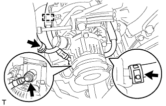
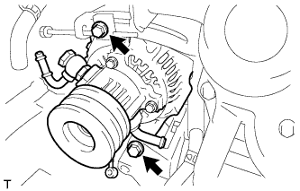

ГЕНЕРАТОР > СНЯТИЕ |
| 1. DISCONNECT CABLE FROM NEGATIVE BATTERY TERMINAL |
| 2. REMOVE FAN AND GENERATOR V BELT |
Remove the fan and generator V belt (See page Нажмите здесь).
| 3. DISCONNECT COOLER COMPRESSOR ASSEMBLY |
 |
Remove the 4 bolts and idle pulley bracket.
 |
Disconnect the connector.
Remove the 3 bolts and disconnect the cooler compressor.
| 4. REMOVE GENERATOR ASSEMBLY |
 |
Remove the terminal cap.
Remove the nut and generator wire.
Disconnect the generator connector.
|  |
Disconnect the vacuum pump hose.
Remove the union bolt to disconnect the vacuum pump oil inlet hose and remove the 2 gaskets.
Detach the vacuum pump oil inlet hose from the cord clip.
Disconnect the vacuum pump oil outlet hose.
|  |
Remove the 2 bolts and generator.